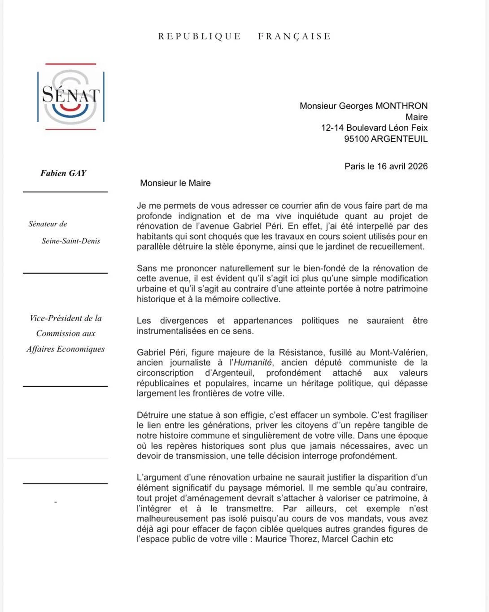
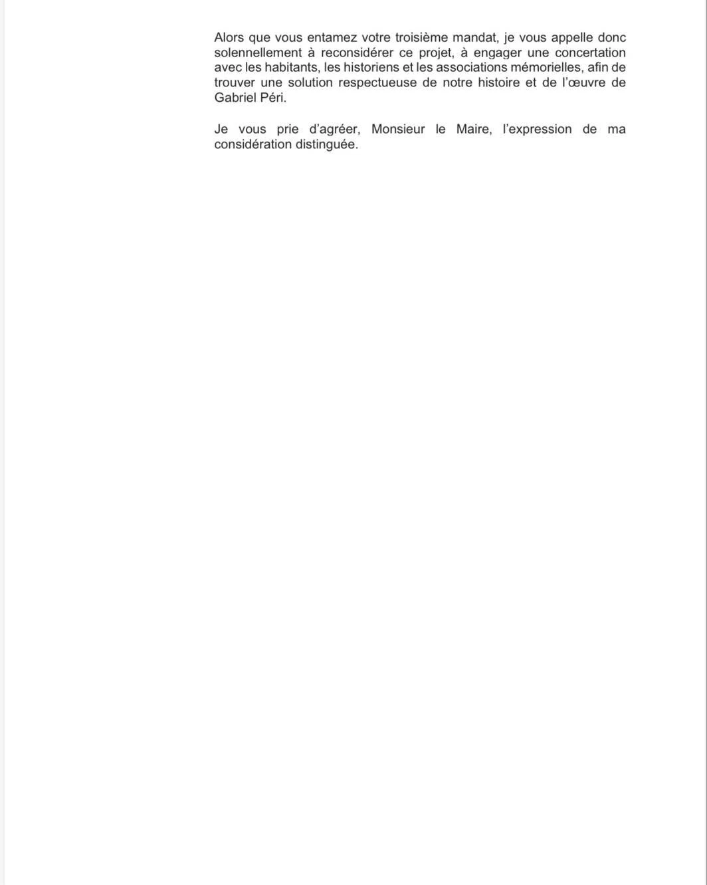

Publication relayée par le PCF 79
Fabien Gay interpelle le maire d’Argenteuil au sujet de la stèle de Gabriel Péri
Date de mise à jour indiquée par Facebook · 22 avril 2026
Texte de la publication · Fabien Gay
Je viens d’être alerté par des camarades : la stèle en l’honneur de Gabriel Péri, dans la ville d’Argenteuil, est en train d’être détruite par des travaux.
Gabriel Péri fut journaliste à *L’Humanité*, député communiste de la ville, résistant et fusillé par les nazis. Rendre hommage à cet homme à travers une stèle, c’est évidemment tisser un lien avec les générations futures pour transmettre la mémoire, mais aussi son combat pour l’émancipation des peuples et contre la barbarie nazie.
J’interpelle donc, en tant que parlementaire et directeur de *L’Humanité*, le maire Georges Mothron afin qu’il revienne sur cette décision et permette que les travaux n’entraînent pas la destruction de cette stèle.


Sources
Fabien Gay · publication relayée par le PCF 79 · bibliothèque Facebook · AR-0002-FB-00808
À lire aussi · À Châteaubriant, l’hommage du 22 octobre aux fusillés · Le lien d’origine